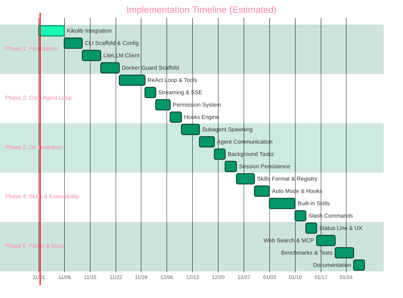

Дата: 2026-10-31 | Версия: 1.0 | Статус: За човешко одобрение
Планът е разделен на 5 фази, всяка с ясни deliverables, criteria за приемане и рискове. Използва се Orchestrator-Driven Workflow с context isolation между моделите (Opus→Sonnet→Haiku→Sonnet).

| Задача | Описание | Deliverable | Criteria |
|---|---|---|---|
| 1.1 Kikolib Integration | Копиране/линкване на ~/kiko/kiko/kikolib/ в runtime кодовата база. Factory registration за http, keystore, server, retry. | runtime/kikolib/ + tests | Всички 10 модула импортват и работят; factory.choose() за всеки kind |
| 1.2 CLI Scaffold | Entry point runtime/__main__.py, argument parsing (argparse/stdin), config loading (yaml_lite + dotenv), logging setup. | runtime command | runtime --help работи; конфиг се чете от ~/.config/runtime/config.yaml |
| 1.3 Config System | Schema: liteLLM base_url, api_key, model, timeout, proxy; docker guard settings; skills paths; permissions. | config.yaml + .env | Валидация на schema; env vars override YAML |
| 1.4 LiteLLM HTTP Client | Wrapper над kikolib.http_client за OpenAI Chat Completions API: /v1/chat/completions, streaming, tool calling format, retry policy. | runtime/llm/client.py | Streaming chunk-ове работят; tool calls се десериализират; retry на 429/5xx |
| 1.5 Docker Guard Scaffold | Dockerfile (python:3.11-slim + kikolib), docker-compose.yml, entrypoint.py (JSON-RPC over stdio), socket activation. | Dockerfile, docker-compose.yml, guard/entrypoint.py | docker compose up стартира guard; JSON-RPC ping/pong работи |
runtime --version извежда версия; runtime config show показва конфиг; guard container отвеча на RPC.
| Задача | Описание | Deliverable | Criteria |
|---|---|---|---|
| 2.1 ReAct Loop | Основен цикъл: user input → LLM → tool calls → execution → results → LLM → response. Context management (sliding window). | runtime/agent/loop.py | Мulti-turn conversation работи; context не расте безкрайно |
| 2.2 Built-in Tools | FileOps (read/write/edit/list/glob/grep), Bash (via guard RPC), TaskSpawn (subagent), WebSearch (ddg/html scrape), MCP client. | runtime/tools/ | Всяко tool има schema, permission, hook points; тестове за всяко |
| 2.3 Streaming & SSE | Token-by-token streaming от LLM → stdout; thinking blocks; tool call streaming; cancel наCtrl+C. | runtime/agent/streaming.py | Нетърпеливо извеждане; Ctrl+C прекъсва текущия tool call |
| 2.4 Permission System | Granular: tool-level, path-level, command-pattern. Config: allowlist/denylist, prompt modes (ask/allow/deny). Persist decisions. | runtime/permissions.py | Permission prompt се появява; "allow all" за сесия работи; persist в ~/.config/runtime/permissions.json |
| 2.5 Hooks Engine | Pre/post: tool_call, tool_result, agent_spawn, slash_command, session_start, session_end, error. Sync + async hooks. | runtime/hooks.py | Hooks се изпълняват в ред; exceptions не чупят main loop; hook timeout |
Можеш да кажеш runtime "прочети main.py и ми кажи какво прави" — agent чете, анализира, отговаря. Streaming работает. Permissions запитват. Hooks се логват.
| Задача | Описание | Deliverable | Criteria |
|---|---|---|---|
| 3.1 Subagent Spawning | Task tool: spawn agent с свой prompt, tools, context limit, parent reference. Returns agent_id. | runtime/agent/subagent.py | Subagent стартира, връща резултат; parent чака (wait-for-idle) или continue |
| 3.2 Agent Communication | Message passing: send_message(to, content), broadcast, shared context (read-only parent context), delegation patterns. | runtime/agent/comms.py | Agent A изпраща съобщение до Agent B; B отговаря; context sharing работи |
| 3.3 Background Tasks | Cron-like scheduler (вътрешен, не system cron), task queue, notify-when-idle, task status polling. | runtime/agent/background.py | Можеш да spawn-неш background task; получаваш notification при completion |
| 3.4 Session Persistence | Save/load conversation history, agent tree, tool call log, checkpoints. Format: JSONL за streaming append. | runtime/session.py | runtime session save / load работи; resume от checkpoint |
Chat създава agent → agent spawn-ва subagent → subagent връща резултат → chat получава summary. Background tasks работят. Сесии се запазват/възстановяват.
| Задача | Описание | Deliverable | Criteria |
|---|---|---|---|
| 4.1 Skills Format Spec | YAML schema: name, version, description, entrypoint (python module:function), schema (JSON Schema за args), hooks[], permissions[], auto_mode: bool, dependencies[]. | runtime/skills/schema.yaml | Валидация на skill.yaml пасва; примери за всеки тип skill |
| 4.2 Skills Registry | Local index (~/.config/runtime/skills/index.json), remote index (GitHub/HTTP), install/update/remove, version resolution, dependency graph. | runtime/skills/registry.py | runtime skill install сваля и регистрира; version conflict resolution |
| 4.3 Auto Mode Engine | Policy-based auto-execution: skills с auto_mode=true се изпълняват без prompt ако permissions allow. Policy: per-skill, per-tool, per-path. | runtime/skills/auto_mode.py | Skill с auto_mode=true стартира без prompt; policy block прави fallback на prompt |
| 4.4 Built-in Skills | code-review, simplify, test-gen, doc-gen, security-review, fewer-permission-prompts, plan, research. Всяка в apart directory с skill.yaml. | runtime/skills/builtin/ | Всяка skill има tests; runtime skill run code-review работи |
| 4.5 Slash Commands | Dynamic command registry: /help, /config, /skill, /session, /agent, /doctor, /plan. Extensible via skills. | runtime/commands.py | Tab completion (readline); /help показва всичко; skills могат да добавят commands |
Можеш да инсталираш skill от URL, да го стартираш, auto_mode работи за trusted skills, slash commands са разширими.
| Задача | Описание | Deliverable | Criteria |
|---|---|---|---|
| 5.1 Status Line & UX | Configurable status line: model, tokens, cost, session time, agent tree, git branch. Colors, format string. Rich formatting (markdown, diffs, syntax highlight via ANSI). | runtime/ui/statusline.py | Status line се обновява реално време; конфигурируем формат |
| 5.2 Web Search & MCP | WebSearch tool (DuckDuckGo HTML + readability), MCP client (stdio + SSE transports), server capability negotiation. | runtime/tools/web_search.py, runtime/mcp/client.py | Web search връща резултати; MCP tools се извеждат в /tools |
| 5.3 Benchmarks & Tests | Integration tests за всеки tool, agent loop scenarios, orchestration scenarios. Benchmark suite (SWE-bench subset, custom tasks). CI pipeline. | tests/, benchmarks/, .github/workflows/ | CI зелени; benchmark базови метрики (success rate, latency, token usage) |
| 5.4 Documentation | User guide, developer guide, skills authoring guide, architecture docs (HTML от ocs/), man pages, bash completion script. | docs/, man/, completion/ | Всички публични APIs документирани; quickstart < 5 мин |
Binary/package публикуван; документация онлайн; CI/CD работещи; примери за skills и workflows.
Context: Искане за zero external deps.
Decision: Всичко на Python stdlib + kikolib (вътрешен, копиран в repo). Никакви pip packages.
Consequences: По-малко features out-of-the-box (няма rich, textual, click), но zero supply chain risk, бърз старт, лесен Docker image.
Context: Codex model — sandbox за всичко.
Decision: Всички tool executions (bash, file ops, network) минават през guard container през JSON-RPC над stdio.
Consequences: Допълнителна latency (~10-50ms/call), но пълна изоляция, resource limits, network policies. Host machine остава чист.
Context: Потребителски workflow: Opus→Sonnet→Haiku→Sonnet с SKILLS.md и Plan-to-HTML.
Decision: Вграден workflow engine в runtime (не отделен инструмент). Skills: plan, research, implement, test, review.
Consequences: Runtime става self-improving; може да си пише и рефакторира свой код.
Context: Изрично изискване.
Decision: Всички user-facing strings на български (кирилица). Internal code/comments на английски.
Consequences: Уникално diferentiation; нужно е i18n infrastructure дори за един език.
Всяко tool извикване минава през container boundary. За file ops и bash това добавя latency.
Mitigation: Connection pooling в guard; batch file ops; async RPC; опционален "unsafe mode" за локална разработка (без guard).
Няма rich/textual за TUI, няма click за CLI, няма pydantic за validation.
Mitigation: kikolib.yaml_lite за config, argparse/stdin за CLI, custom ANSI formatting за UI. Приемлива сложност за v1.
LiteLLM proxy може да има специфични headers, routing rules, error formats.
Mitigation: Тестове срещу реален LiteLLM instance в CI; flexible client config за custom headers/routing.Ако форматът не се заимства от общността, екосистемът остава празен.
Mitigation: Форматът да е максимално близък доClaude Code skills + MCP tool schema; export/import tools.runtime инсталира се с pipx install . или docker pullruntime "напиши ми hello world на python" работи end-to-end